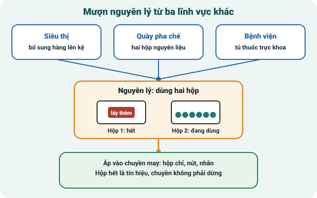

K4 · Sáng tạo và cải tiến › Bậc 4 Thành thạo
Mượn ý tưởng từ lĩnh vực khác và dẫn một dự án cải tiến đến kết quả đo được
Bài Bậc 4 (Thành thạo). Cách lập kế hoạch dự án có ở bài Quản lý dự án gọn nhẹ. Cách thuyết phục các bên có ở bài Thuyết phục khi không có chức danh.
1. Mục tiêu
- Viết lại bài toán ở dạng chung, rồi tìm 3 lĩnh vực khác đã gặp bài toán giống.
- Dẫn một vòng cải tiến 5 bước, đến quyết định giữ, chỉnh hay bỏ.
2. Khởi động truy xuất
- Đề xuất cải tiến 1 trang gồm 4 phần nào?
- Vì sao phải đo hiện trạng trước khi thử?
Đáp án
- Hiện trạng; giải pháp; lợi ích; cách thử.
- Không có số liệu trước thì không chứng minh được cải tiến.
Xem lại: Viết đề xuất cải tiến nhỏ.
3. Giải thích
Khi làm lâu trong một ngành, ta hay tìm giải pháp trong chính ngành đó. Nhưng nhiều bài toán đã được ngành khác giải từ lâu. Người senior giỏi cải tiến thường hỏi: "Ai khác đã gặp bài toán giống thế này?"
Mượn ý tưởng: 3 bước.
Mượn ý tưởng từ lĩnh vực khác
- Viết bài toán ở dạng chungBỏ tên ngành. "Hồ sơ vay chờ duyệt lâu" thành "việc chờ xếp hàng qua nhiều người".
- Tìm 3 lĩnh vực có bài toán giốngVí dụ: bệnh viện phân loại bệnh nhân, quán ăn nhanh, sân bay làm thủ tục.
- Rút nguyên lý, không chép cách làmBệnh viện ưu tiên theo mức độ gấp, không theo giờ đến. Nguyên lý đó dùng được ở đâu?
Bước 3 quan trọng nhất. Chép nguyên cách của ngành khác thường không hợp. Mượn nguyên lý rồi chỉnh cho bối cảnh của đội.
Dẫn vòng cải tiến 5 bước. Ở Bậc 3, bạn viết đề xuất. Ở Bậc 4, bạn dẫn cả vòng đến khi có kết quả. Vòng này giống chu trình Plan–Do–Check–Act quen thuộc trong quản lý chất lượng.
1. Hiện trạng có số 2. Giả thuyết 3. Thử nhỏ 4. Đo và quyết định 5. Chuẩn hóa
Giả thuyết viết theo dạng: "Nếu ta làm X, chỉ số Y sẽ đổi từ A sang B." Viết trước khi thử, để không tự điều chỉnh mục tiêu sau.
Quyết định có 3 lựa chọn: giữ, chỉnh rồi thử lại, hoặc bỏ. Bỏ cũng là kết quả tốt nếu có số liệu.
Chuẩn hóa là bước hay bị quên. Viết lại quy trình, hướng dẫn người làm, và hẹn kiểm lại sau một tháng. Không chuẩn hóa thì mọi người dần quay về cách cũ.
Kéo người liên quan vào sớm. Mời họ cùng chọn chỉ số đo. Nói rõ thử có thời hạn và quay lại được. Người được góp phần thiết kế thường sẵn lòng thử hơn.
4. Ví dụ tại nơi làm việc Việt Nam
Tình huống giả định. Chị Ngọc là kỹ sư quy trình senior ở một xưởng may. Chuyền may hay dừng chờ vì thiếu phụ liệu: chỉ, nút, nhãn.
- Dạng chung: "nhiều điểm dùng vật tư nhỏ, hết lúc nào không biết trước".
- Lĩnh vực khác: siêu thị bổ sung hàng lên kệ; quầy pha chế dùng hai hộp nguyên liệu luân phiên; tủ thuốc trực khoa ở bệnh viện.
- Nguyên lý mượn: dùng hai hộp. Hộp thứ nhất hết thì đó là tín hiệu đi lấy thêm. Trong lúc chờ, chuyền dùng hộp thứ hai.
Chị Ngọc dẫn vòng cải tiến:
- Hiện trạng: 2 tuần đo được 9 lần dừng chuyền vì thiếu phụ liệu (giả định).
- Giả thuyết: dùng hai hộp ở chuyền 3 thì số lần dừng giảm còn dưới 3 trong 2 tuần.
- Thử nhỏ: chỉ chuyền 3, 2 tuần. Tổ trưởng chuyền cùng chọn cách đếm.
- Đo và quyết định: còn 2 lần dừng. Quyết định giữ, chỉnh cỡ hộp nhãn.
- Chuẩn hóa: viết hướng dẫn một trang, áp dụng thêm 2 chuyền, hẹn kiểm lại sau 1 tháng.

Vì sao cách này tốt: chị Ngọc mượn nguyên lý, không chép nguyên mô hình. Giả thuyết có số trước khi thử. Tổ trưởng chuyền được tham gia từ đầu.
5. Thực hành
Tình huống giả định. Bạn là chuyên viên senior ở phòng chăm sóc khách hàng của một công ty bảo hiểm. Khách gọi tổng đài thường bị chuyển qua 2–3 người mới gặp đúng người giải quyết.
Viết bài toán ở dạng chung, tìm 3 lĩnh vực khác, rút một nguyên lý, và viết giả thuyết.
Gợi ý 1
Dạng chung: yêu cầu bị chuyển nhiều chặng trước khi đến đúng người. Ngành nào phải phân loại yêu cầu ngay từ đầu?
Gợi ý 2
Nghĩ đến quầy hướng dẫn ở bệnh viện, quầy lễ tân khách sạn, quầy thông tin sân bay.
Lời giải mẫu
Dạng chung: yêu cầu đi qua nhiều chặng vì không được phân loại ngay ở điểm đầu.
Lĩnh vực khác: quầy phân loại ở bệnh viện; lễ tân khách sạn; quầy thông tin sân bay.
Nguyên lý: người đầu tiên hỏi 2–3 câu phân loại cố định, rồi chuyển thẳng đến đúng nhóm.
Giả thuyết: nếu nhân viên tiếp nhận dùng 3 câu phân loại, tỷ lệ cuộc gọi bị chuyển quá 1 lần giảm rõ rệt sau 2 tuần. Trước khi thử, cần đo tỷ lệ hiện tại và ghi con số mục tiêu.
6. Tự kiểm tra
Chọn đáp án. Mỗi lựa chọn đều có giải thích.
Câu 1. "Đơn hàng online giao chậm vì kho tìm hàng lâu" viết ở dạng chung là gì?
-
Chưa đúng. Đây là nhận xét về người, chưa phải bài toán ở dạng chung.
-
Đúng. Đúng. Bỏ tên ngành, giữ bản chất. Thư viện hay hiệu thuốc cũng gặp bài toán này.
-
Chưa đúng. Đây là một giải pháp, không phải mô tả bài toán.
Câu 2. Vì sao nên mượn nguyên lý thay vì chép nguyên cách làm của ngành khác?
-
Chưa đúng. Lý do chính không phải bản quyền. Cách làm ở bối cảnh khác thường không hợp.
-
Đúng. Đúng. Mượn nguyên lý rồi điều chỉnh thì dễ hợp với điều kiện thật.
-
Chưa đúng. Không đúng. Ngành khác có thể đã giải bài toán rất tốt.
Câu 3. Vì sao viết giả thuyết có con số trước khi thử?
-
Đúng. Đúng. Viết trước giúp đánh giá trung thực, kể cả khi kết quả không như mong.
-
Chưa đúng. Hình thức không phải mục đích. Mục đích là đánh giá trung thực.
-
Chưa đúng. Không bắt buộc đạt. Con số giúp so sánh và quyết định giữ, chỉnh hay bỏ.
Câu 4. Cải tiến thử thành công, nhưng một tháng sau mọi người quay về cách cũ. Bước nào đã bị bỏ qua?
-
Chưa đúng. Nếu thiếu bước này thì không biết thử có thành công không.
-
Đúng. Đúng. Không viết lại quy trình, không hướng dẫn và không kiểm lại thì cách cũ quay về.
-
Chưa đúng. Giả thuyết giúp đánh giá thử, không giúp giữ cách mới lâu dài.
Câu 5. Tổ trưởng ngại thử cách mới. Cách nào giúp nhiều nhất?
-
Chưa đúng. Ra lệnh có thể làm được, nhưng tổ trưởng ít ủng hộ khi gặp khó.
-
Đúng. Đúng. Người được tham gia thiết kế và thấy rủi ro thấp thì dễ đồng ý thử.
-
Chưa đúng. Làm sau lưng người liên quan làm mất lòng tin.
7. Phản tư
- Vấn đề nào đội bạn đã thử giải nhiều lần mà chưa được? Viết nó ở dạng chung.
- Lần cải tiến gần nhất của đội có bước chuẩn hóa không? Kết quả sau một tháng ra sao?
8. Áp dụng thật
Trong 7 ngày tới, chọn một vấn đề của đội. Viết nó ở dạng chung và tìm 3 lĩnh vực khác. Mời một người liên quan cùng chọn chỉ số đo. Viết giả thuyết có con số trước khi thử.
Mức bằng chứng. Ba bước mượn ý tưởng và vòng 5 bước là cách làm do site đề xuất. Chu trình Plan–Do–Check–Act được dùng rộng rãi trong quản lý chất lượng; bài chỉ dẫn chiếu tên, không chép tài liệu nào.
9. Siêu dữ liệu
| skill | K4 · Sáng tạo và cải tiến |
|---|---|
| level | Bậc 4 · Thành thạo |
| group | N4 |
| framework_map | WEF: Creative thinking; CSfW: 3d Create and innovate; SkillsFuture CCS: Creative Thinking; EntreComp: Creativity; Valuing ideas; Mobilising others (chỉ dẫn chiếu) |
| updated | 2026-11-14 |
Hoàn thành bài
Đánh dấu đã học để site gợi ý lịch ôn sau 1, 3 và 7 ngày. Dữ liệu chỉ lưu trên máy của bạn.
Lịch ôn gợi ý: